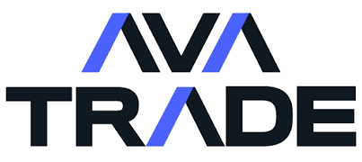
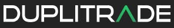

1
TRE STEG
2
Anslut kontot
3
Välj strategi
INNAN DU BÖRJAR
Tre aktörer – tydliga roller.
AvaTrade
Extern, reglerad mäklare där kundernas kapital hålls på deras egna konton.
DupliTrade
Extern teknisk plattform som gör det möjligt att ansluta ett mäklarkonto till AlgoLodges investeringsmodeller.
AlgoLodge
Utvecklar investeringsmodellerna, övervakar strategiernas handel och följer upp riskerna. Kundernas kapital förvaras inte hos AlgoLodge.
KOM IGÅNG
Fem steg. En tydlig process.
Stegen beskriver det avsedda förfarandet, inte någon garanti för att ett visst konto, en produkt eller en strategi erbjuds i ditt land.
- 01
Utforska strategierna
Gå igenom Vitalik, Satoshi, Krypto Knight, Gold Bug, Hot Commodities och Soft Commodities. Jämför marknader, handelsmetoder, historiska rapporter och riskinformation. Välj en strategi först när du förstår att betydande förluster kan uppstå.
Se alla sex strategier ↗ - 02
Kontrollera behörighet och öppna ett CFD-konto hos AvaTrade
Kontrollera direkt med AvaTrade att CFD-handel och DupliTrade erbjuds personer bosatta i ditt land. Om du är behörig genomför du kontoregistrering, identitetskontroll och den lämplighetsbedömning som mäklaren kräver.
Öppna konto via partnerlänk ↗ - 03
Sätt in pengar på ditt eget konto
Det föreslagna startkapitalet är 10 000 USD per strategi, med förbehåll för kontroll av positionsstorlek och strategins faktiska kapitalkrav. Det är inte mäklarens minimikrav och innebär inte att förluster begränsas till ett visst belopp. Dina pengar finns hos mäklaren, inte hos AlgoLodge.
Läs om insättningar ↓ - 04
Anslut DupliTrade och välj en strategi
Följ AvaTrades och DupliTrades aktuella anslutningsinstruktioner. Kontrollera att den valda AlgoLodge-strategin finns tillgänglig för ditt konto. Granska inställningar, positionsstorlek, hävstång och tillgänglig marginal innan du aktiverar.
- 05
Aktivera, följ upp och hantera risk
När kontot och anslutningen har godkänts kan du aktivera strategin enligt leverantörernas instruktioner. Följ öppna positioner, marginal, finansieringskostnader, skillnader i orderutförande och nedgångar. Ta reda på hur anslutningen pausas eller avslutas och vad som händer med befintliga positioner.
Så avslutar du en strategi ↓
EXTERNA TJÄNSTELEVERANTÖRER


MÄKLAREN
AvaTrade – etablerad sedan 2006
AvaTrade är en internationell mäklargrupp som grundades 2006. För kunder som omfattas av dess irländska EU-bolag är AVA Trade EU Ltd reglerat av Central Bank of Ireland (registreringsnummer C53877). Vilken juridisk enhet som hanterar ditt konto beror på bosättningsland och kontovillkor. Kapitalet hålls på ditt eget konto hos AvaTrade, inte hos AlgoLodge.
2006Grundat
IrlandEU-bolaget står under irländsk tillsyn
Separata kundmedelSkilda från mäklarens egna rörelsemedel
FINANSIERA KONTO
Sätt in kapital på ditt eget konto
Efter att kontot har godkänts loggar du in hos AvaTrade och väljer insättning under Finance / Deposit. Pengarna sätts in hos mäklaren, aldrig hos AlgoLodge.
Banköverföring
Ett alternativ när du vill föra över kapital från ditt bankkonto. Använd alltid de betalningsuppgifter som visas i ditt AvaTrade-konto.
Kort
Sätt in kapital med kort där metoden är tillgänglig för ditt konto.
Onlinebetalningar
Ytterligare insättningsalternativ kan finnas beroende på land och kontotyp.
KOM IGÅNG
Redo att investera?
Börja med att öppna ett konto hos AvaTrade och meddela oss när processen har startat. För att ansluta kontot till AlgoLodges modeller behöver kontot registreras via AvaTrades partnerkod 8947. Detta sker automatiskt om du använder vår särskilda registreringslänk. Om du vid kontoöppningen ombeds ange en partnerkod, skriv 8947.
Registreringslänken innehåller partnerkod 8947. Om AvaTrade frågar efter partnerkod, ange 8947.
Kontakta AlgoLodge
Fyll i dina uppgifter så att vi kan hjälpa dig vidare med anslutningen.
AVSLUTA OCH TA UT KAPITAL
Du bestämmer när du vill avsluta.
Du kan själv avsluta en modellanslutning och begära uttag från ditt mäklarkonto. Det sker i två separata steg, och du behåller kontrollen över ditt kapital.
Koppla bort modellen
Avsluta anslutningen till den valda handelsmodellen via plattformen. Kontrollera om det finns öppna positioner och hantera dem separat vid behov.
Ta ut kapitalet
Logga in hos AvaTrade och begär uttag till ett godkänt betalningskonto. Uttaget hanteras av mäklaren enligt dess rutiner och villkor.
Att koppla bort en modell stänger inte nödvändigtvis redan öppna positioner. Tillgängligt uttagsbelopp kan påverkas av öppna affärer, marginalkrav och mäklarens kontroller.
VANLIGA FRÅGOR
Att känna till innan du börjar
Hur mycket kapital behöver jag sätta in?
Det finns inget gemensamt kapitalbelopp som passar alla. Du bestämmer själv hur mycket kapital du vill sätta in på ditt eget konto. Kontrollera AvaTrades kontovillkor och de valda strategiernas kapital- och marginalbehov innan du börjar.
Kan jag följa flera strategier?
Ja. Du kan välja flera tillgängliga strategier och själv fördela kapitalet mellan dem på plattformen. Tänk på att varje strategi använder marginal och att flera modeller kan ha överlappande exponering.
Kommer mitt konto att få samma resultat som de publicerade?
Inte nödvändigtvis. CFD-spreadar, finansieringskostnader, hävstång, ordertidpunkt, slippage, positionsstorlek och kapitalflöden kan påverka resultatet. Historiska siffror ska märkas med källa och beräkningsmetod.
Är tjänsten tillgänglig i mitt land?
Det beror på var du är bosatt, vilken AvaTrade-enhet som hanterar ditt konto och om den aktuella strategianslutningen erbjuds där. Kontrollera tillgänglighet och behörighet med AvaTrade och den tekniska plattformen innan du öppnar eller finansierar ett konto.
Hur avslutar jag en strategi och tar ut kapitalet?
Du avslutar först anslutningen till modellen via den tekniska plattformen. Kontrollera och hantera eventuella öppna positioner på ditt AvaTrade-konto. Därefter kan du begära uttag via AvaTrades plattform enligt mäklarens villkor.